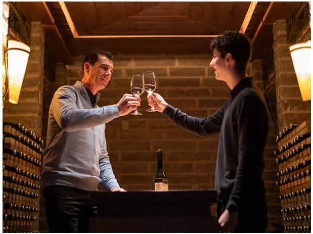
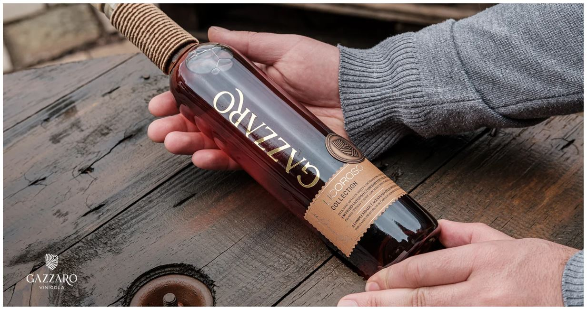

Home
Bem-vindo à Vinícola Gazzaro, uma empresa que combina a tradição familiar com a tecnologia para
oferecer vinhos e espumantes de alta qualidade. Sonho que começo em 1896 por Pietro Gazzi,
um imigrante italiano que trouxe consigo o amor pela produção de vinhos, a vinícola é hoje
uma empresa moderna e respeitada no setor.
Nós da Vinícola Gazzaro estamos empenhados em fornecer aos nossos clientes os melhores produtos e serviços possíveis.
Trabalhamos com as melhores uvas, colhidas em nossa região. Isso nos permite produzir vinhos e espumantes
que combinam elegância, tradição e modernidade em cada taça.

A nossa história é marcada por uma trajetória consistente no mundo do vinho, onde a qualidade e a busca constante
por tecnologia e qualificação sempre foram nossos principais objetivos.
Em 1945, os descendentes de Pietro fundaram a Sociedade de Bebidas Gazzi Ltda, dando continuidade à tradição familiar.
Em 1970, José Gazzi, neto de Pietro, começou a produzir vinhos de mesa em sua residência, e em 1993, com o aumento das vendas,
a família adquiriu novas estruturas, dando origem à Vinícola Gazzaro Ltda.
Hoje, a empresa está localizada na cidade de Flores da Cunha, no distrito de Otávio Rocha,
a maior produtora de uvas e vinhos do país. Aqui, oferecemos mais do que apenas vinhos e espumantes, mas excelência em cada taça.
Trabalhamos para entregar produtos de qualidade, com atendimento personalizado, agilidade na entrega e a busca constante por novidades.
